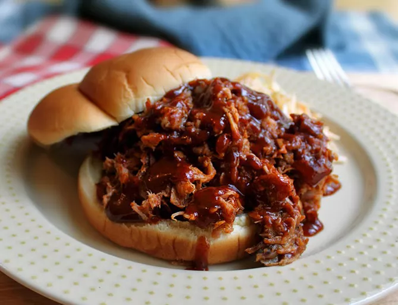

Chef John's Pulled Pork BBQ Recipe

Use your favorite dry rub and barbecue sauce to make this succulent pulled pork barbecue. A little trick I like is to put two ramekins with liquid smoke flavoring in with the meat and roast it slowly. Do your patriotic American duty and serve this pork on the cheapest, lightest white hamburger buns you can find.
- 3 tablespoons dry barbecue rub, or more as needed
- 1 (3 1/2) pound bone-in pork shoulder blade roast
- Half teaspoon liquid smoke flavoring, divided
- 1 cup water, divided
- 1 1/2 cups barbecue sauce, or as needed, divided
- Salt and freshly ground black pepper to taste
- 12 soft white hamburger buns
Method:
- Preheat the oven to 210 degrees F (100 degrees C).
- Sprinkle dry rub generously on all sides pork roast: place into a Dutch oven or heavy pot.
- Divide liquid smoke between two 6-ounce ramekins; fill each with 1/2 cup water. Place ramekins in Dutch oven on either side of roast; cover.
- Roast in the preheated oven until very tender, about 12 hours. Transfer roast onto a work surface (such as a cutting board); separate the meat from the bone using your fingers. Discard any large pieces of fat.
- Roughly chop pork with a large knife or cleaver; drizzle with 3/4 cup barbecue sauce. Season with salt and black pepper.
- Spread about 1 tablespoon barbecue sauce onto each bun; pile on pork to serve.
Home